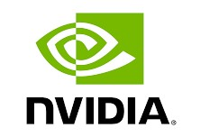
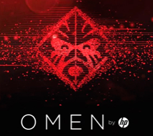
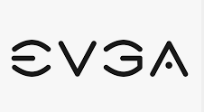

Razer se convierte en la marca más popular del mundo del gaming
Razer se ha configurado como la marca líder en estilo de vida en el
mundo del gaming, ya que ha conseguido un sinnúmero de premios durante
el CES 2021 de Las Vegas, incluyendo el "People's Choice Award" por
segundo año consecutivo.

CPU de 16 núcleos, alta frecuencia y DDR5
Intel hizo un adelanto rápido a su siguiente generación, y se afirma
que vamos a ver el lanzamiento de dicha arquitectura este año.

Tarjeta gráfica barata e ideal para 4K o emuladores
Es la sucesora de la popular GT 710, que ya tiene unos años. La nueva
GeForce GT 1010 no es una tarjeta gráfica para jugar, ya que no tiene
potencia suficiente, pero seguro que será muy solicitada, como su
predecesora, para montar mini PCs.
HyperX presenta su teclado mecánico compacto Alloy Origing 60
HyperX ha presentado en el marco de CES 2021 el teclado mecánico Alloy
Origins 60 de diseño compacto junto a una base de carga para los
controlares de las videoconsolas de Microsoft.
.png)
Logitech MX Anywhere 3 está rebajado en Amazon a 69,99
Mouse ultracompacto Logitech MX Anywhere 3, el cual se puede conseguir
en Amazon al precio de 69,99 euros.
AMD aumentará la producción de chips para satisfacer la demanda de
PlayStation 5 y Xbox Series X|S
AMD confirmó que aumentará la producción de chips de 7nm para
satisfacer la demanda de la PlayStation 5 y Xbox Series X en 2021. La
empresa recurrirá a TSMC, el fabricante taiwanés de procesadores.
ASUS actualiza sus portátiles ROG con Ryzen 5000, RTX 3000 y hasta con
la primera laptop gamer convertible
ROG, submarca de ASUS, quiere seguir como el líder en ventas en la
industria gamer y llegar cada vez a un mayor número de creadores,
artistas y streamers.
Acer renueva sus líneas de monitores Nitro y Predator para consolas y
PC
Una parte importante de este programa parece estar destinada
específicamente para el sector de los videojuegos, con la llegada de
nuevos monitores gaming orientados específicamente para su uso en
consolas y PC.
Avermedia presenta nuevas capturadoras de alta calidad para PS5 y
Series X: 4K, HDR, 120fps
Este dispositivo, que en lugar de ser una capturadora externa como
otras, va conectada directamenta a la placa base, cuenta con una
interfaz USB 3.1 de tipo C y acepta entrada y salida HDMI 2.0.
Cooler Master anuncia la refrigeración MasterAir MA624
Cooler Master ha presentado la refrigeración por aire MasterAir MA624,
que tiene la particularidad de incluir tres ventiladores. El disipador
está dividido en dos bloques recorridos por seis caloductos de cobre
de contacto directo con el procesador.
MSI presenta sus primeras laptops de 2021 con RTX 3080, Intel Core i9,
resolución 4K
MSI realizó su evento virtual “MSIology” donde presentaron sus nuevos
equipos para iniciar 2021, presumiendo que todos los modelos
anunciados tendrán GeForce RTX 30 Series para seguir en el tope de
gama en videojuegos.
GIGABYTE AORUS C700, nueva caja futurista para PCs gaming
El tamaño total de la caja es de 714 mm x 301 mm x 671 mm (AxAnxAl).
Dentro vamos a poder añadir una placa base que puede ser hasta E-ATX.
El espacio para añadir una tarjeta grafica se antoja bastante
espacioso con 490 mm y un refrigerador para CPU de hasta 198 mm.
BenQ lanza nuevo monitor gaming: el Zowie XL2546S ofrece hasta 240 Hz
en pantalla y resolución 1080p
Pensado para el potente mercado gaming, el BenQ Zowie XL2546S llega
ofreciendo hasta 240 Hz de frecuencia en pantalla y una resolución
Full HD. El BenQ Zowie XL2546S tiene unas líneas casi calcadas al
modelo al que antes hemos hecho referencia.
Dell renueva el Alienware Aurora con hasta un Ryzen 9 5950X y una RTX
3090.
Dell ha renovado su sobremesa Alienware Aurora añadiendo a la edición
Ryzen R10 la opción de obtenerlo con hasta un Ryzen 9 5950X y hasta
una GeForce RTX 3090. El equipo no cambia en gran medida aunque el
modelo base está altamente dopado.
Lenovo presenta sus nuevos ThinkBook y Legion en CES 2021
Ha presentado hoy en la feria anual de tecnología sus nuevas gamas de
dispositivos electrónicos ThinkBook y Legion; series de productos que
no tienen nada que ver puesto que una de ellas ofrece un servicio del
día a día para todo tipo de tareas.

HP presenta sus nuevos portátiles gaming, ideales para el verano
El nuevo portátil gaming HP Omen 15, un modelo que ofrece un diseño y
características técnicas de altura. Tambien entrara en escena el HP
Pavillion 16.
ASRock también presenta sus placas 500 Series para Rocket Lake
Diseñadas para el segmento entusiasta y premium, en esta categoría
encontramos como punta de lanza la ASRock Z590 Taichi, que adopta los
últimos estándares USB4 y Thunderbolt 4 que proporcionan hasta 40 Gb/s
de velocidad de transferencia.

EVGA presenta sus GeForce RTX 3060 12GB XC y XC Black
EVGA anunció oficialmente sus nuevas GeForce RTX 3060 12GB XC y XC
Black, llevando todas las tecnologías de última generación al segmento
de tarjetas gráficas más vendido del mercado.Basadas en la
arquitectura Ampere, con RT Cores de 2da. Generación, Tensor Cores de
3ra. Generación.